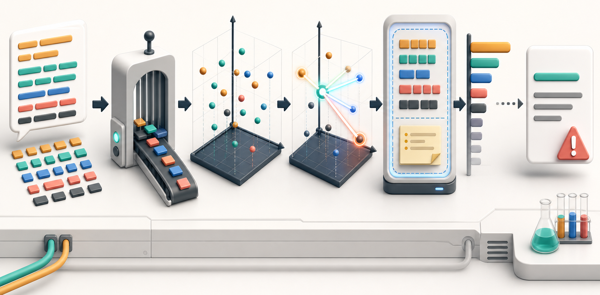

AI 学习目录 / AI 技术基础 02
LLM 第一性原理
先学什么：LLM 不是知识库，也不是数据库
LLM 的第一性原理：它根据上下文预测下一个 token。它能表现出总结、改写、推理和对话能力，但底层仍是概率生成系统。
它擅长语言模式
LLM 读过大量文本，学到表达、结构、概念关系和常见推理路径，因此很擅长生成看起来连贯的内容。
它不天然知道事实状态
模型参数里有训练时学到的模式，但不等于实时事实库。最新价格、公司政策、订单状态都需要外部数据。
它需要产品约束
结构化输出、引用、拒答、工具调用、评估集和人工确认，都是把概率系统变成可用产品的方法。
理解这句话，就能解释为什么它很会写，也能解释为什么它会幻觉。
Token：模型处理的最小片段
模型不是逐字理解中文，也不是逐词理解英文。输入会先被切成 token，再变成模型能计算的编号。
Token 会影响成本和长度
上下文窗口、计费、响应长度通常都按 token 计算。长文档、表格、日志会很快占满窗口。
Token 会影响理解
罕见词、代码、混合语言、长数字串被切分后可能更难处理。产品上要尽量输入结构清楚的材料。
Embedding：把语义放进可计算空间
Embedding 是把 token、句子、文档变成向量。向量之间的距离可以表达相似性，所以它是搜索、聚类、推荐和 RAG 的基础。
直观理解
如果“咖啡店选址”和“商圈客流分析”在语义上接近，它们的向量距离也应该更近。模型不是用关键词硬匹配，而是在空间里找相似含义。
产品用法
把知识库段落转成向量，用户提问也转成向量，再找最相近的段落给模型，这就是很多 RAG 系统的核心步骤。
找回来的资料仍要检查来源、时间、权限和是否真的回答了问题。
Attention：机制链路看这一张图
这张图对应 LLM 的关键链路：token 被向量化，模型用注意力在上下文里寻找相关信息，再根据概率生成输出。

Attention 在做什么
生成每个 token 时，模型会根据当前任务动态给上下文中不同片段分配权重。它不是固定看前一句，而是按相关性分配注意力。
为什么对产品重要
如果输入混乱、无关信息太多、关键事实太远，模型就可能关注错地方。产品上要控制输入顺序、格式和上下文密度。
上下文不是记忆
窗口里的内容当前可见，窗口外的内容不能直接使用。长期记忆需要外部存储、检索和权限控制。
输出是概率结果
模型会从候选 token 中选择输出。Temperature 越高，表达越发散；越低，输出越稳定但可能更死板。
上下文窗口：能看见什么，决定能回答什么
上下文窗口是模型一次请求中能处理的 token 上限。它越大，能放更多材料，但不代表模型会完美使用每个细节。
窗口会满
长文档、历史对话、工具返回、系统规则都会占 token。窗口满了以后，旧内容可能被截断或压缩。
信息会稀释
即使窗口没满，无关信息过多也会降低关键事实权重。产品上要先筛选、分段、排序，再送给模型。
位置会影响结果
关键要求放在系统规则、用户问题附近、输出格式前后，通常比埋在长文中更稳。
RAG 是补上下文
RAG 不是让模型“变聪明”，而是在请求时把更相关的资料放进窗口，让模型基于资料生成。
幻觉：不是小毛病，而是机制结果
幻觉来自概率生成：当模型缺事实、问题含糊、上下文冲突或用户强迫回答时，它仍可能生成流畅但错误的内容。
常见触发
- 问题要求最新事实，但没有联网或资料。
- 上下文里有冲突信息，模型没有被要求说明冲突。
- 输出格式很强，模型为了填满字段而编造。
- 用户要求给确定答案，但事实本来不充分。
产品控制
- 要求引用来源，且来源必须来自给定资料。
- 允许拒答和“不确定”。
- 把高风险输出交给人类审批。
- 用评估集持续检查事实错误率。
AI PM 的价值就在于把这些控制手段设计进产品。
关键词学习：点开看释义和例子
本页只集中处理关键概念。置灰词代表本节不展开，后续单独学。
Token
模型处理文本时使用的片段单位，可能是一个字、一个词的一部分、一个符号或一段常见组合。
一段长门店评价会被切成很多 token；token 越多，占用上下文越多，调用成本也越高。
自测：用产品问题检查理解
下面的问题不是背概念，而是训练你把技术机制翻译成产品判断。
问题 1
查看答案为什么一个长文档问答产品不能只把所有资料都塞进上下文窗口？
上下文窗口有 token 上限；即使没超限，无关资料太多也会稀释注意力、增加成本和延迟。更稳的做法是先切分文档，再用检索、排序和引用把最相关片段放进窗口。
问题 2
查看答案为什么“请准确回答，不要编造”不能从根本上解决幻觉？
幻觉来自概率生成和事实不足。提示语只能影响输出倾向，不能凭空提供事实。产品上要补资料、要求引用、允许拒答、设置评估集，并在高风险场景加入人工确认。
问题 3
查看答案做一个选址分析助手时，哪些事实应该通过 RAG 或工具提供，而不是期待模型记住？
实时或本地化事实都应由外部资料提供，例如 POI、客流、租金、竞品分布、交通可达性、历史订单、人口画像、商圈变化和最新规则。模型负责综合解释，不负责凭记忆给事实。
问题 4
查看答案如果你希望输出稳定、可解析、可进入业务系统，应该如何设计结构化输出和评估集？
先定义固定字段、取值范围、必填项和错误处理，例如风险等级、原因、引用来源、置信度。再准备覆盖真实场景的评估集，检查格式通过率、事实正确率、引用命中率和人工修改成本。